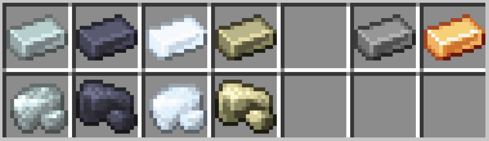
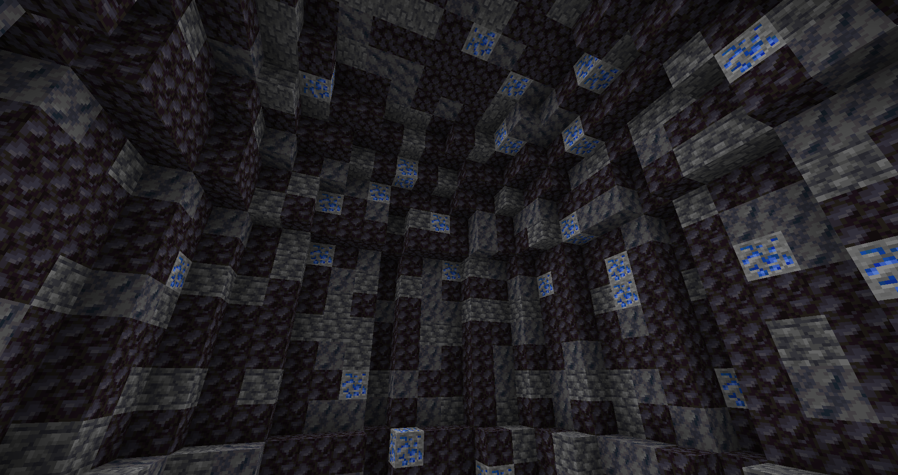
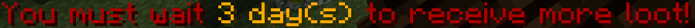
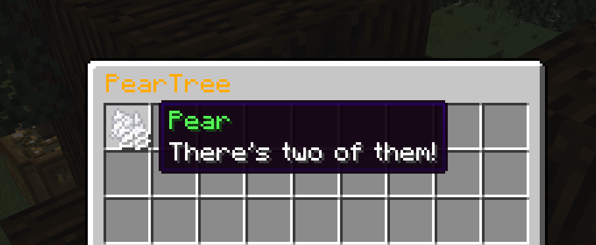
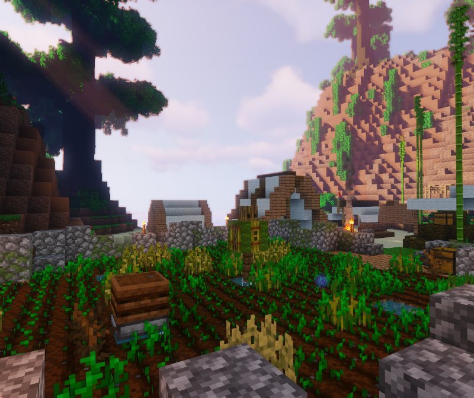

From biome based farming, to custom ore generation, to our series of resource nodes, BWRP is filled with fun resource gathering mechanics to help encourage more interesting lines of roleplay and help to reduce some of the need for traditional survival gameplay. Our resource nodes allow a passive income of materials to be generated as long as they're well maintained by a faction. Custom ore generation allows for prospecting and discovering hotspots to drive intrigue or exploitation. Biome based farming encourages trade between our factions, whilst a whole suite of weird and wonderful alchemy and other builds exist to discover and harvest for rare custom resources to apply to your trades.
BWRP introduces a suite of new ores and alloys to the game including but not limited to: Steel, Bronze, Nickel, Lead, Silver and Tin. Many have custom crafting recipes applied within the game and all have limitless potential for RP crafting with a Storyteller.

BWRP has hand painted ore distribution favouring large distinct deposits over consistent scatter for all ores. Seperate to this, both coal and Iron have an additional low level of generation across the whole map to reduce scarcity. The large deposits give themselves away with an increase in ambient ore in the environment. By surveying caves and surface sites for one or two chunks of ore you can figure out where a large deposit may sit below the surface and plan larger scale mining from there. It can frequently be beneficial to avoid scraping surface ore so you can continue using it to find the larger deposits below.

Spread throughout the map are many geodes containing new and wonderful gems. These include but are not limited to: Aquamarine, Turquoise, Moonstone, Onyx, Jade, Malachite, Topaz, Garnet, Sapphire, Opal, Peridot, Sunstone, and Ruby. Geodes are marked by a distinctive mix of Blackstone, Smooth Basalt, Deepslate, and their resource!
Throughout BWRP you may find chests that represent a recurring natural resource. Examples might include a chest in a cave of spiders, that represents a source of webs and silk, or a chest at the top of a palm tree that stands for a place where coconuts might be found. These chests are part of a plugin for the server, and this plugin re-stocks these chests after they've been harvested, with an interval correlating to rarity, or even just how long such a thing would take to regenerate over time. If a chest is empty, or has been partially emptied, you'll get a message telling you how long it will be until the contents re-stock. Such messages refer to IRL earth-time, not the in-game time.

The items in these chests often have additional tag data (a server mechanic), added lore descriptions, custom textures, or a special name. In most cases it's not possible to make these items, even through crafting RP, and they must be gathered from these nodes - but there are exceptions!

To harvest these items, you can just take them out of the chest! It's that easy. In terms of roleplay, this represents your character mining ore, picking berries, or carefully cutting strands of spider web, but you don't need to roleplay such actions distinctly unless you feel like it would enhance the roleplay of any scene you’re in.
It's also possible to find special resources of these types by hunting particular creatures, using certain class skills in the right context, or through RP with a storyteller should an opportunity arise.
Items generated in all of these ways are often needed for special recipes, such as alcohol brewing, cooking, smithing or even the creation of alchemical potions - so if you see a chest out in the world, or a strange creature, consider being curious! If that's what your character would do, that is.
A variety of cultivatable plants can be found across Nebelloren, but even the most intrepid farm will quickly find that some plants simply aren't fit to grow in certain biomes. On BWRP we employ a plugin that governs the growth rate of crops per biome and also adds a chance for them to wither and die in unsuitable biomes or when crops fail.
Most crops will grow to some extent in every biome, but will take far longer than normal if their conditions are not ideal. An intrepid cultivator however can create fertilizer solutions using their crafting recipes to speed up the growth of all plants in an 8 block radius to help grow a variety of crops!
Noticing a large amount of dead bushes where you planted your precious crops? You may be experiencing crop death due to a crops unsuitability to its biome. Crop death occurs when a plant fails to grow, and is more likely in biomes not suited to their soil. Intrepid cultivators can make scarecrows using their crafting recipes to prevent nasty pests and other blights from ruining your crop in a 16 block radius.
